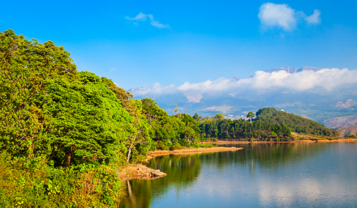
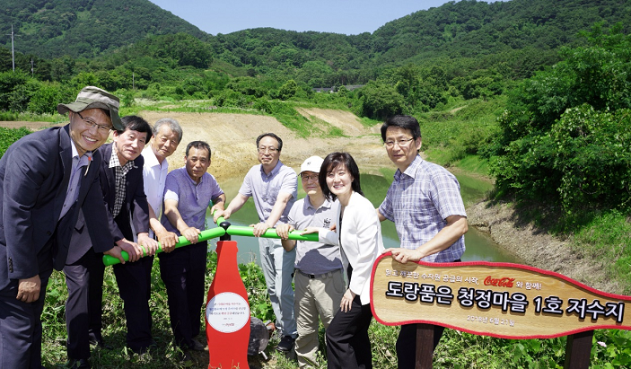
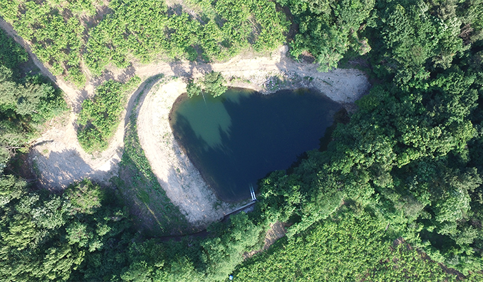
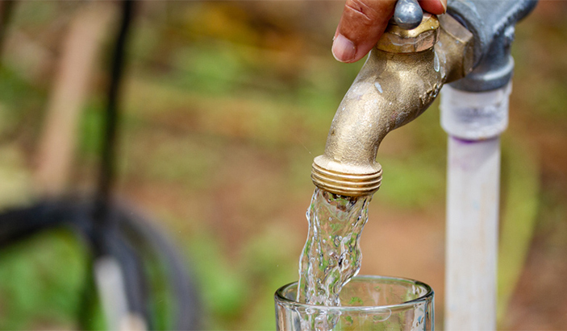

Water Leadership
물 한 방울의 소중함을 인지하고 책임감을 가지고 사용하고 있으며, 더 나아가 우리가 사용한 물을 지역사회에 돌려주기 위해 노력하고 있습니다.

10년 만의 변화, 김해 시례 마을에 무슨 일이? (feat. 김연아 내레이션)
시례 마을의 저수지 확장 공사를 통해 마을 전체에 수자원이 늘어나고 수질에도 변화가 생겼다는데?


[코카-콜라 물 환원 프로젝트] 1.7조 리터의 깨끗한 물이 지역사회로!
사용한 물의 100%를 자연에 다시 돌려주겠다는 목표는 이루었지만, 코카-콜라의 도전은 계속되고 있다.
